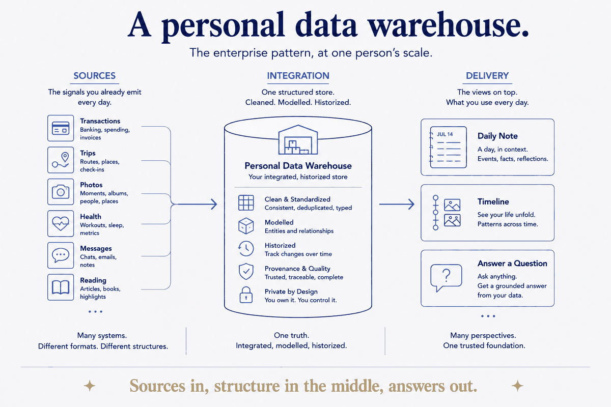

One structured store for your knowledge: sources → integration → delivery.

The enterprise data-warehouse pattern applied to a life: sources flow through integration into delivery, giving one structured source of truth for personal knowledge.
The shape is not a metaphor — it's the same architecture, at one person's scale. Sources: the signals you already emit every day, in whatever format they arrive — transactions, trips, photos, health metrics, messages, reading. Integration: one structured store where those are cleaned, deduplicated, typed, modelled into entities and relationships, and historized so change is visible rather than overwritten. Delivery: the views on top — a daily note, a timeline, an answer to a question you couldn't have asked before.
The reason data teams converged on this shape is the reason it works here. Many systems, different formats, different structures — but one truth in the middle, so every view above it agrees. Skip the middle and you get what most people have: a dozen apps that each know a fragment and none that can answer across them.
What's different at personal scale is only ownership. There's no vendor, no seat licence, no export negotiation. The sources are yours, the store is a folder of files you control, and the delivery layer is whatever you point at it. Sources in, structure in the middle, answers out.